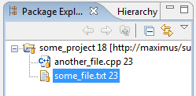
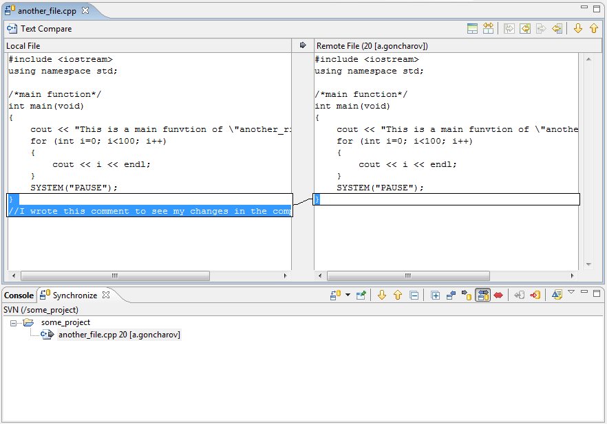

|
|
|
Let's imagine that the user have a shared project "Some project" associated with his workspace copy. There are files "some_file.txt" and "another_file.cpp" containing in the main project folder. So the user decides to make some changes to this great project.
For example the user added the "//I wrote this comment to se my changes in the compare editor" line to the end of "another_file.cpp". Then the user saves the changes. Then the user synchronizes the state of the project. The "another_file.cpp" in the 'Synchronize View' would be marked with an outgoing change decoration. To view the changes the user simply has simply double click on the file and the compare editor opens, showing the local file contests on the left and the remote file contents on the right as follows:
After making sure that the changes are convenient the user commits this file clicking, for example, on the 'Commit' pop-up menu item of the "another.cpp" file.
The work is done.